00
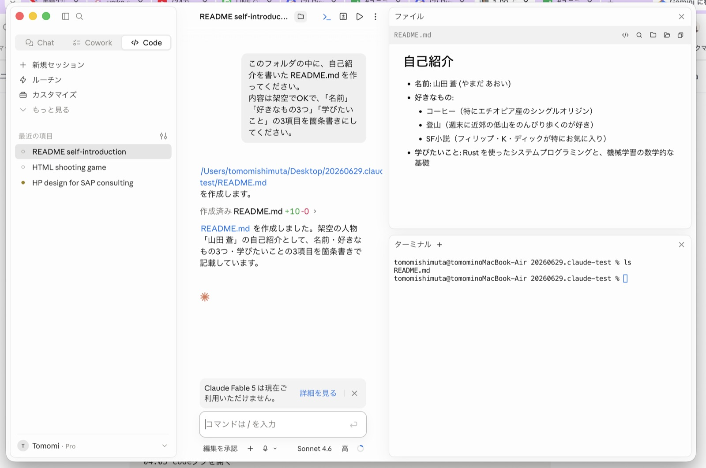
初級README生成
自己紹介READMEの自動生成
やったこと：架空人物の自己紹介READMEを指示だけで作成。工夫点：項目数(名前・好きなもの3つ・学びたいこと)と構成を指定。わかったこと：指示の粒度がそのまま出力の質になる。
Claude Codeを使ったAI開発の練習記録。README生成からSubAgent・Skill自作・ブラウザ自動操作・GitHub公開まで、初級から中級へ段階的に取り組んだ過程を残しています。

やったこと：架空人物の自己紹介READMEを指示だけで作成。工夫点：項目数(名前・好きなもの3つ・学びたいこと)と構成を指定。わかったこと：指示の粒度がそのまま出力の質になる。
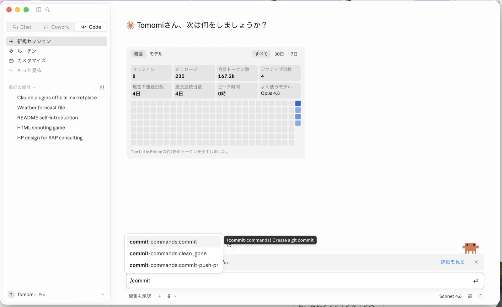
やったこと：セッション数・メッセージ数・トークン量・継続日数を可視化。工夫点：日々の利用ペースを数値で把握。わかったこと：継続日数が学習の指標になる。
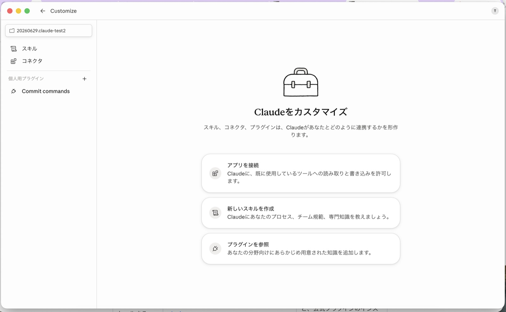
やったこと：スキル・コネクタ・プラグインを管理する設定画面を確認。工夫点：アプリ接続/スキル作成/プラグイン参照の3導線を整理。わかったこと：Claudeの拡張性はこの3つの仕組みに集約される。
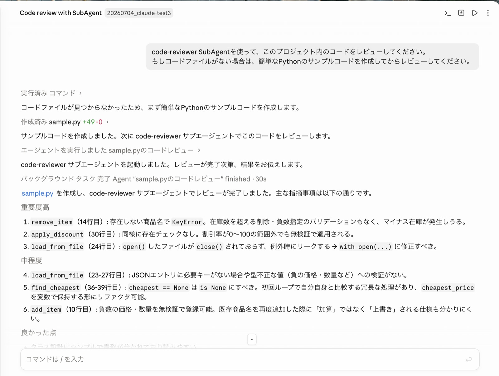
やったこと：サンプルコードを作成しcode-reviewer SubAgentでレビュー。工夫点：指摘を重要度高・中程度で分類させた。わかったこと：KeyErrorやリソースリークなど実務レベルの指摘が得られた。
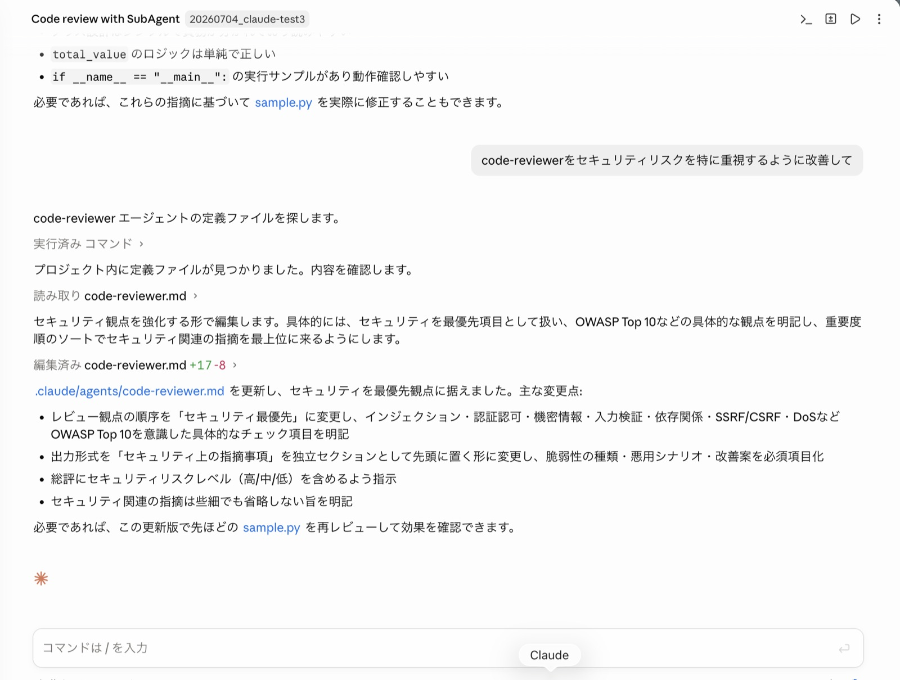
やったこと：code-reviewer.mdを編集しセキュリティを最優先観点に変更。工夫点：OWASP Top10を意識したチェック項目を明記。わかったこと：エージェント定義文を書き換えるだけでレビュー観点を制御できる。
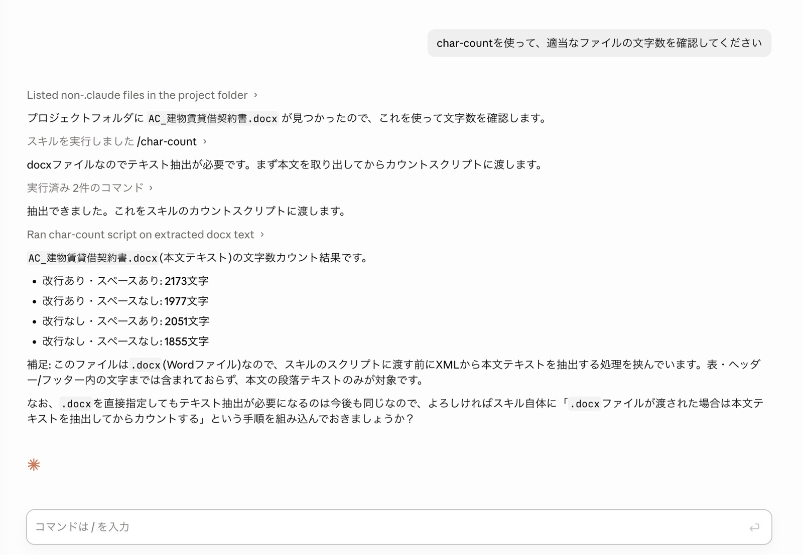
やったこと：char-countスキルで実際の契約書(.docx)の文字数を計測。工夫点：改行/スペース有無で4パターンの文字数を算出。わかったこと：Wordファイルは本文抽出処理を挟む必要がある。
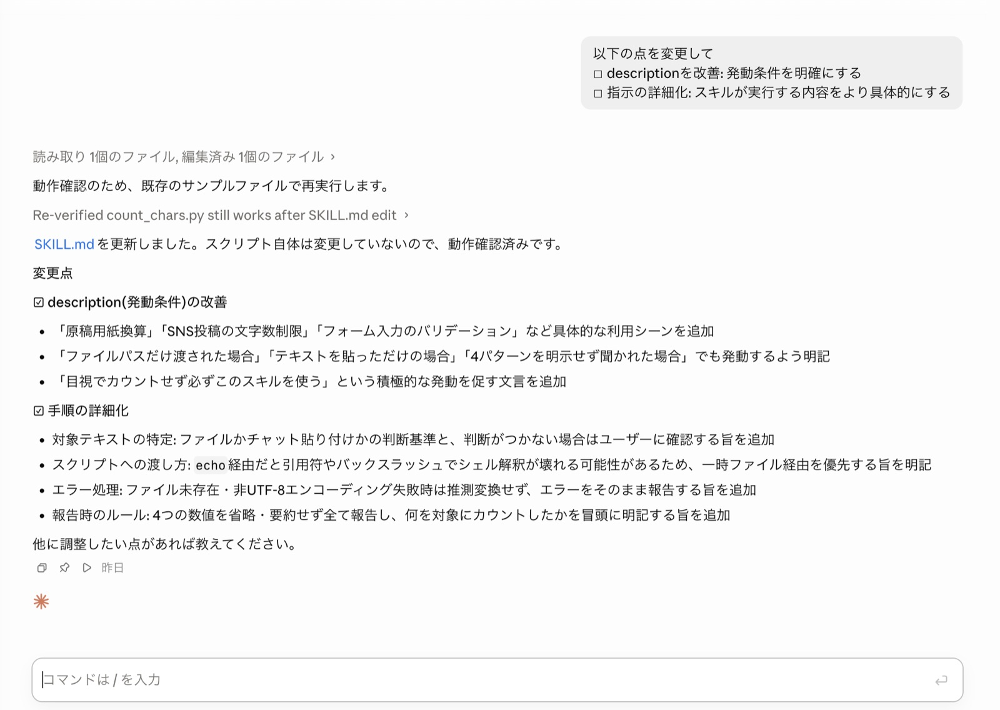
やったこと：descriptionと手順を詳細化しSKILL.mdを更新。工夫点：発動条件を具体的な利用シーンで明記し、echo経由の落とし穴にも対処。わかったこと：Skillは「いつ発動するか」の記述が精度を左右する。
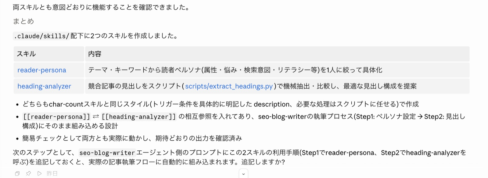
やったこと：読者ペルソナ具体化スキルと見出し構成分析スキルを新規作成。工夫点：2つのスキルを相互参照させ既存の執筆フローに組み込める設計に。わかったこと：Skill同士を連携させると一連のワークフローになる。
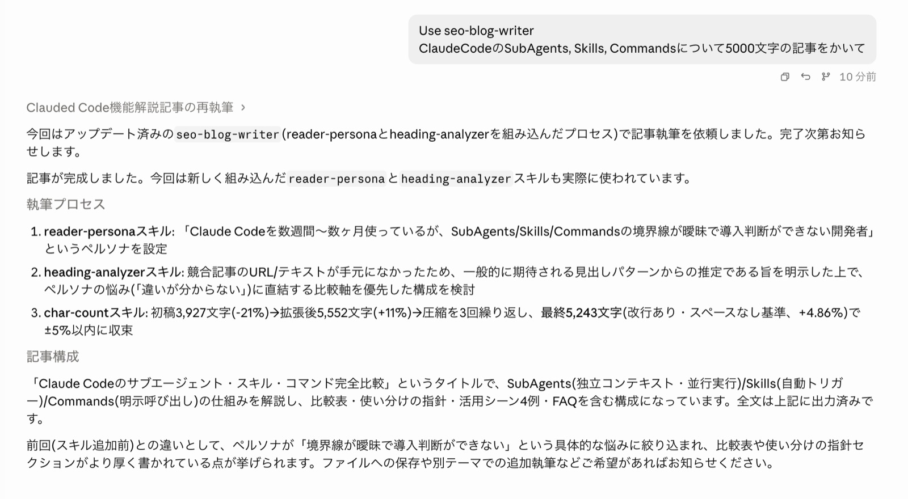
やったこと：reader-persona/heading-analyzer/char-countを組み合わせ記事を生成。工夫点：文字数を3回の圧縮調整で目標の±5%以内に収束。わかったこと：Skillの合成で執筆品質と分量が安定する。
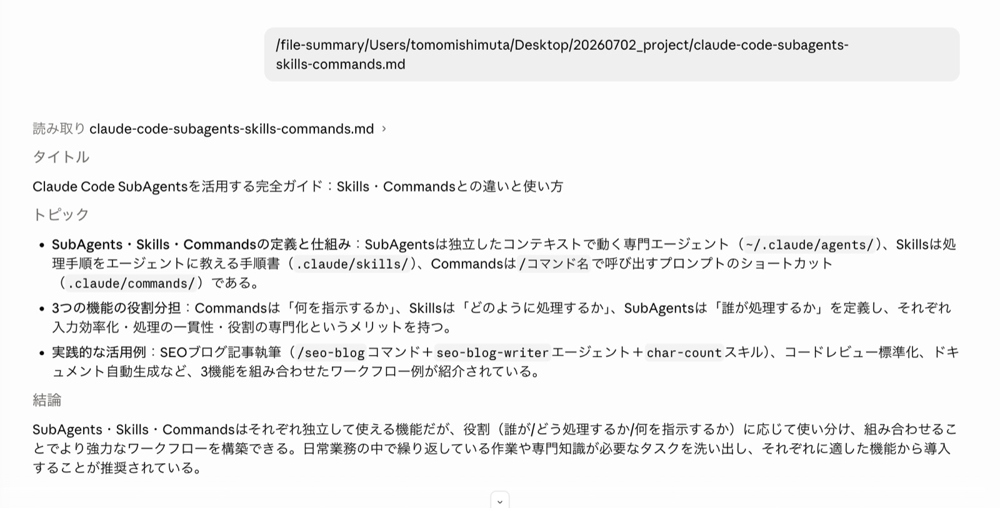
やったこと：解説記事のmdファイルをfile-summaryスキルでタイトル・トピック3つ・結論に要約。工夫点：既存のfile-summaryスキルをそのまま活用。わかったこと：長文でも要点3つに絞れば全体像を素早く掴める。
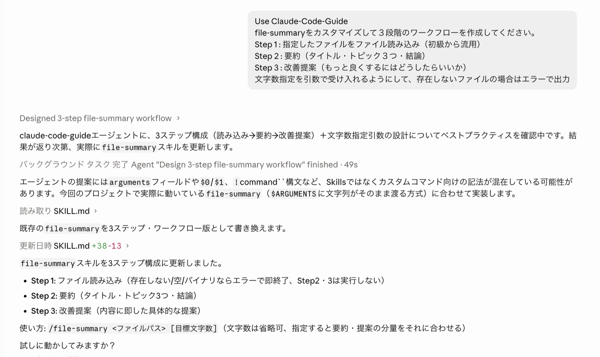
やったこと：読み込み→要約→改善提案の3ステップにSkillを再設計。工夫点：claude-code-guideエージェントに相談しベストプラクティスを確認。わかったこと：既存Skillも段階を足すだけでワークフロー化できる。
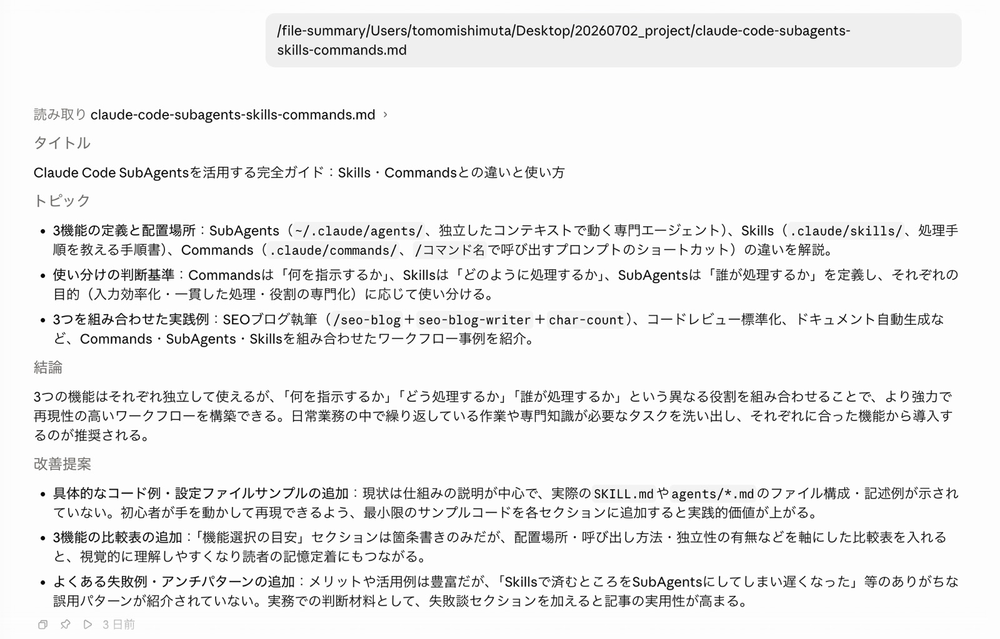
やったこと：更新したfile-summaryを同じ資料に再実行し改善提案付きの出力を確認。工夫点：Before/Afterを同一ファイルで比較。わかったこと：改善提案が加わり単なる要約から一歩踏み込んだ出力になった。
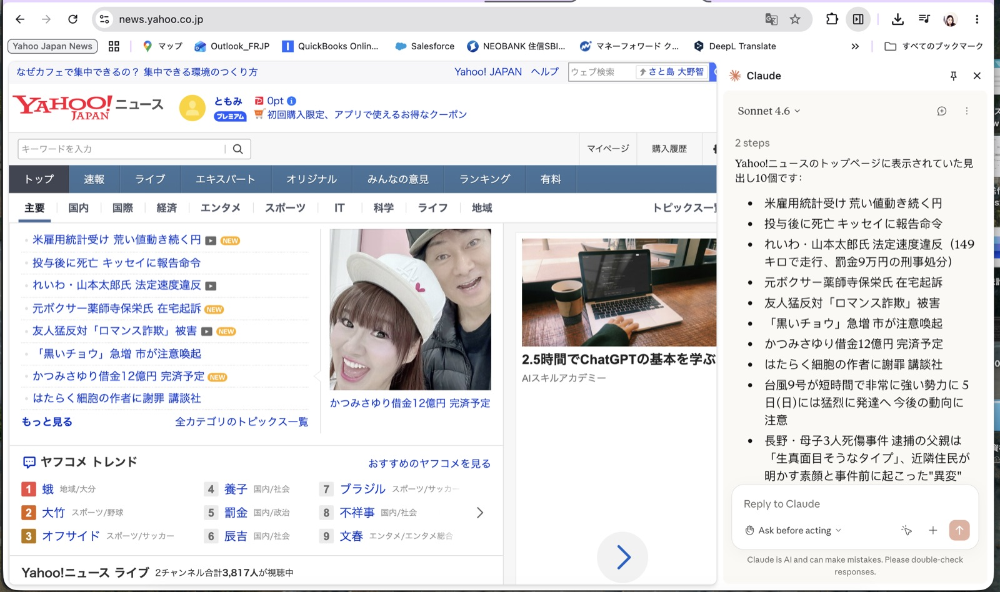
やったこと：Claude in ChromeでYahoo!ニュースのトップ見出し10個を取得。工夫点：ページ内容の読み取りのみに範囲を限定。わかったこと：ブラウザの表示内容をそのままテキストとして扱える。
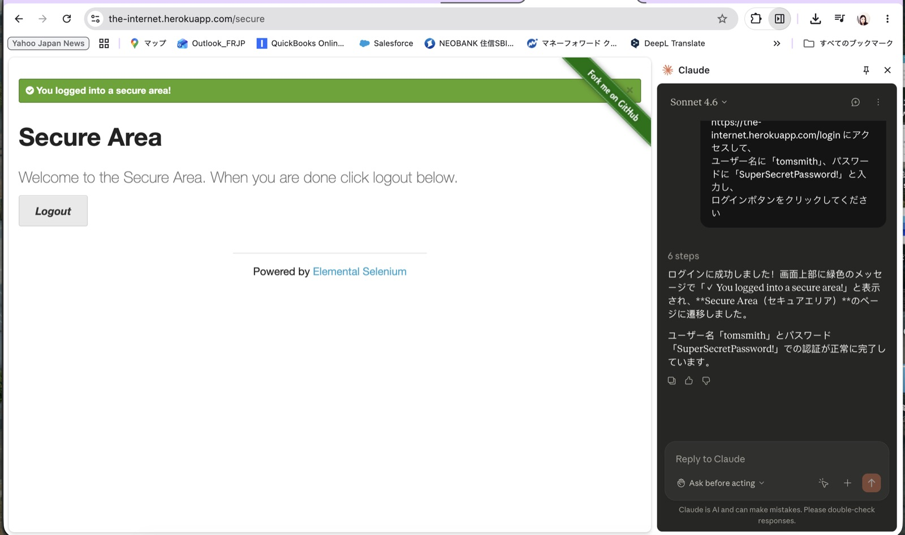
やったこと：テスト用サイトのログインフォームにユーザー名/パスワードを入力し認証を自動化。工夫点：6ステップの操作を1指示で完結させた。わかったこと：フォーム入力から遷移確認までブラウザ操作を任せられる。
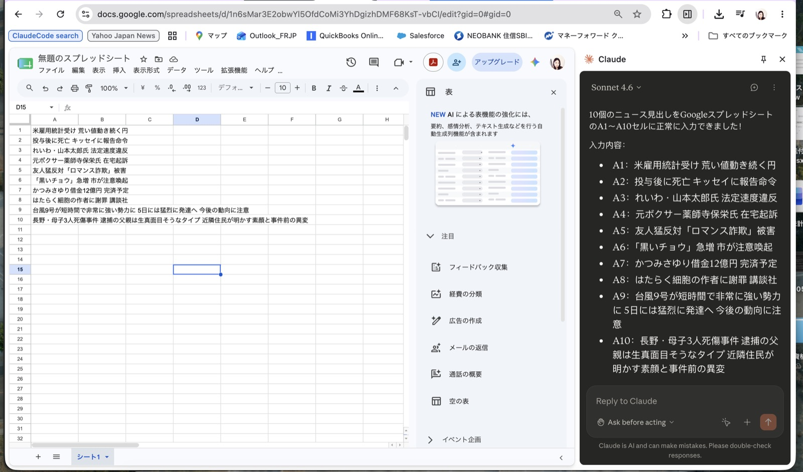
やったこと：取得済みのニュース見出し10件をGoogleスプレッドシートのA1〜A10に自動入力。工夫点：ブラウザで読み取った内容を別サービスへそのまま連携。わかったこと：ブラウザ横断の自動化で単純作業を代替できる。
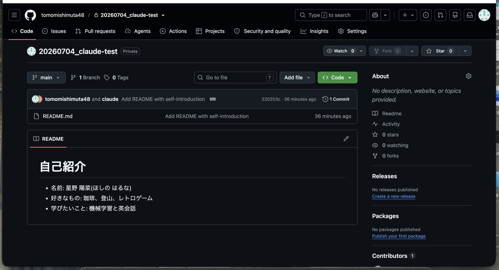
やったこと：READMEを新規リポジトリにコミットしGitHubへ公開。工夫点：ローカルでの生成物を初めて外部に公開する形に。わかったこと：成果物を人に見せる形に仕上げる工程を体験できた。
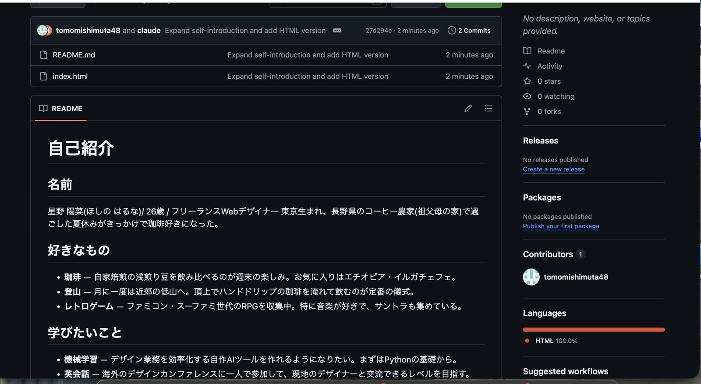
やったこと：reader-persona/heading-analyzerを組み込んだ状態でseo-blog-writerを再実行。工夫点：スキル追加前後の違いを比較できるようにした。わかったこと：Skillを増やすほどペルソナ設定や構成の精度が上がることを確認できた。